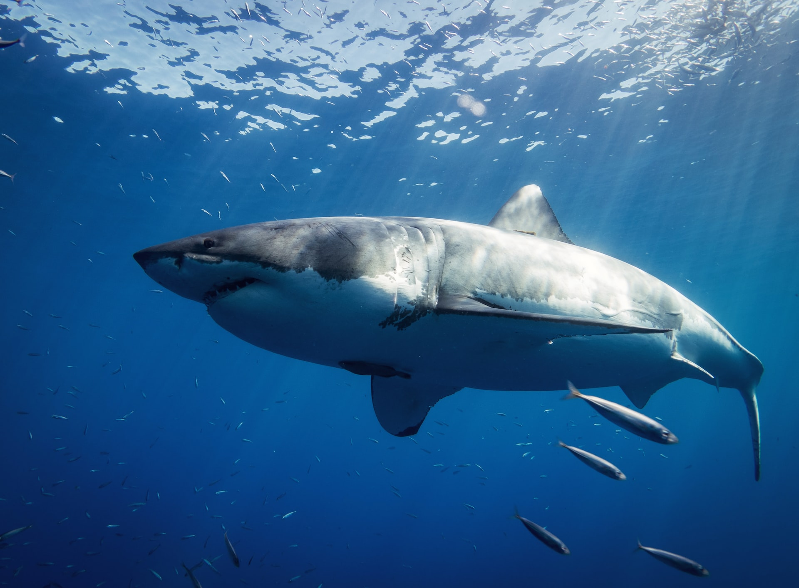

Кархародон, Акула біла, також велика біла акула (Carcharodon carcharias) — вид хрящових риб єдина сучасна з роду білих акул родини оселедцевих акул.
Велика біла акула. Спосіб життя та середовище проживання великої білої акули
Велика біла акула – один з найдавніших видів риб, що населяли океани нашої
планети. Біла акула належить до родини оселедцевих акул

Біла акула: спосіб життя
Великі білі акули живуть у водах всіх океанів, де температура коливається в межах від
11 ° С до 25 ° С. Вони тримаються на глибинах до 30 м, а
взимку збираються в зграї біля
берегів Південної Африки там, де сходяться дві течії – тепла Агульяс та холодна
Бенгельська. У цих місцях
зосереджені великі лежбища південних морських котиків.
Морські хижачки люблять ними поласувати.
Довжина великої білої акули може перевищувати 6 метрів
Це залежить від середовища проживання. Черево – біле, з-за нього
акула і отримала свою назву. Грань між сірою спиною і білим животом не
можна назвати гладкою і плавною. Вона швидше ламана або рвана.
Така забарвлення чудово маскує акулу в товщі води: з бічного ракурсу її
обриси стають плавними і практично невидимими, при вигляді зверху
більш темна спина змішується з тінями і донним ландшафтом.
Дивіться також: Акула мако. Спосіб життя і середовище проживання акули мако
Цікаві факти про великих білих акул
-
Ця акула була у всій серії Hungry Shark (включаючи "трилогію").
- Вони можуть бути великими, але під час плавання вони можуть досягати швидкості 40 миль на годину.
- Акула вважається вразливою у списку зникаючих та захищена в деяких районах.
- Великі білі не дуже добре справляються в неволі. Деякі жили понад 6 місяців, перш ніж їх випустили назад в океан.
- На відміну від грабельної, Біла акула зіграла дуже багато ролей, різних фільмів, як, наприклад, фільм "Щелепи". Там акулу описують людожером і найстрашнішою кровогубцем!
- У реальному житті мегалодон є предком білої акули.
- З'являється у короткометражці. Описується Біла акула, як злою та страшною акулою.
- У всіх акул зуби виростають наново!
- Їх тривалість життя становить близько 25 років.
- Шкіра акули дуже шорстка і її можна використовувати як наждачний папір.
- Вони можуть повернути очі назад у голову, щоб захистити їх.
Біла акула: розмноження
Велика біла акула розмножується яйцеживонародженням. Запліднені яйця
розвиваються в організмі матері. У кожного ембріона є
своя жовткова капсула, і його
розвиток відбувається індивідуально. Сильні ембріони поїдають ослаблених, тому на
світ народжується
не більше 8 дитинчат. Вагітність триває близько 11 місяців.
Вага новонародженого досягає 30 кг, а довжина до 1,5 м. Малі акули готові до
самостійного життя. Вони здатні самі знаходити собі їжу,
але серед них дуже велика
смертність, і до року доживає лише невелика кількість.
Сила укусу
У 2007 році Університет Нового Південного Уельсу, Сідней, провів дослідження акулячого черепа методом комп'ютерної томографії, на підставі якого була створена модель, що дозволяє оцінити силу і динаміку укусу. У 2008 році був проведений експеримент, який дозволив оцінити міць акулячих щелеп. Було виявлено, що сила укусу білої акули довжиною 2,5 м і масою 240 кг може досягати 3131 Н, тоді як у акули довжиною 6,4 м і масою 3324 кг вона становить 18216 Н.
Її відносний коефіцієнт сили укусу становить 164, тоді як у тасманійського диявола він дорівнює 181, а у нільського крокодила — 440. Втім, враховуючи гостроту зубів, акулам немає потреби кусати в повну міць.
Де вони живуть?
Великі білі акули водяться по всьому Світовому океану, як правило, в прохолодних водах поблизу
узбережжя. Вони мешкають в районах,
де температура води тримається від 54 до 75 градусів за
Фаренгейтом. Вони часто зустрічаються поблизу Японії, Австралії,
Південна Африка, і обидва
узбережжя США.